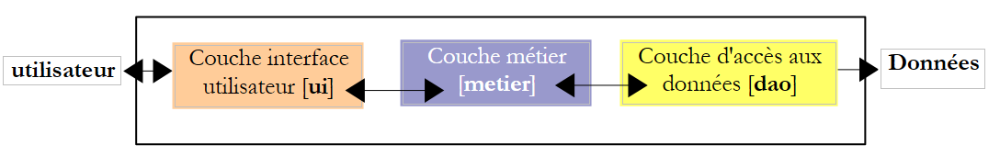
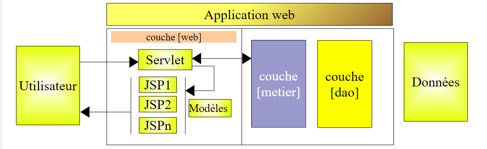

4. Entwicklung von MVC (Model – View – Controller)
Eine Webanwendung verfügt häufig über eine 3-Tier-Architektur:

- Die Schicht [dao] kümmert sich um den Zugriff auf die Daten, meist um persistente Daten innerhalb eines SGBD. Es kann sich aber auch um Daten handeln, die von Sensoren, aus dem Netzwerk usw. stammen.
- Die Schicht [metier] implementiert die „Geschäftslogik“-Algorithmen der Anwendung. Diese Schicht ist unabhängig von jeglicher Form der Benutzerschnittstelle. Daher muss sie sowohl mit einer Konsolenoberfläche als auch mit einer Weboberfläche oder einer Rich-Client-Oberfläche verwendet werden können. Sie muss somit auch außerhalb der Weboberfläche getestet werden können, insbesondere mit einer Konsolenoberfläche. Dies ist in der Regel die stabilste Schicht der Architektur. Sie ändert sich nicht, wenn die Benutzeroberfläche oder die Art und Weise, wie auf die für den Betrieb der Anwendung erforderlichen Daten zugegriffen wird, geändert wird.
- Die Schicht [interface utilisateur] ist die (oft grafische) Benutzeroberfläche, über die der Benutzer die Anwendung steuern und Informationen von ihr erhalten kann.
Die Kommunikation verläuft von links nach rechts:
- Der Benutzer sendet eine Anfrage an die Schicht [interface utilisateur]
- Diese Anfrage wird von der Schicht [interface utilisateur] aufbereitet und an die Schicht [métier] weitergeleitet
- Wenn die Schicht [métier] zur Bearbeitung dieser Anfrage Daten benötigt, fordert sie diese von der Schicht [dao] an
- Jede abgefragte Schicht übermittelt ihre Antwort an die linksseitige Schicht, bis die endgültige Antwort den Benutzer erreicht.
Die Schichten [métier] und [dao] werden normalerweise über Java-Schnittstellen genutzt. Somit kennt die Schicht [métier] von der Schicht [dao] lediglich deren Schnittstelle(n) und nicht die Klassen, die diese implementieren. Dies gewährleistet die Unabhängigkeit der Schichten untereinander: Eine Änderung der Implementierung der Schicht [dao] hat keinerlei Auswirkungen auf die Schicht [métier], solange die Definition der Schnittstelle der Schicht [dao] nicht verändert wird. Das Gleiche gilt für die Schichten [interface utilisateur] und [métier].
Die Architektur MVC (Modell – Ansicht – Controller) ist in der Schicht [interface utilisateur] angesiedelt, wenn es sich bei dieser um eine Webschnittstelle handelt:

Die Bearbeitung einer Anfrage eines Kunden erfolgt in folgenden Schritten:
- Der Client sendet eine Anfrage an den Controller. Dieser empfängt alle Anfragen der Clients. Er ist das Eingangstor der Anwendung. Er entspricht dem „C“ in MVC.
- Der Controller C verarbeitet diese Anfrage. Dazu benötigt er möglicherweise die Unterstützung der Geschäftslogikschicht. Sobald die Kundenanfrage verarbeitet wurde, kann dies verschiedene Antworten auslösen. Ein klassisches Beispiel ist:
- eine Fehlerseite, wenn die Anfrage nicht korrekt verarbeitet werden konnte
- eine Bestätigungsseite, andernfalls
- Der Controller wählt die Antwort (= Ansicht) aus, die an den Client gesendet werden soll. Die Auswahl der an den Client zu sendenden Antwort erfordert mehrere Schritte:
- Auswahl des Objekts, das die Antwort generieren soll. Dies wird als Ansicht V bezeichnet, das V aus MVC. Diese Auswahl hängt in der Regel vom Ergebnis der Ausführung der vom Benutzer angeforderten Aktion ab.
- Bereitstellung der Daten, die die Ansicht benötigt, um diese Antwort zu generieren. Tatsächlich enthält diese meist Informationen, die vom Controller berechnet wurden. Diese Informationen bilden das sogenannte Modell M der Ansicht, das M aus MVC.
- Schritt 3 besteht also in der Auswahl einer Ansicht V und der Erstellung des dafür erforderlichen Modells M.
- Der Controller C fordert die ausgewählte Ansicht auf, sich anzuzeigen. Meistens geht es dabei darum, eine bestimmte Methode der Ansicht V auszuführen, die für die Generierung der Antwort an den Client zuständig ist. In diesem Dokument bezeichnen wir sowohl das Objekt, das die Antwort an den Client generiert, als auch diese Antwort selbst als „Ansicht“. Die Dokumentation MVC geht auf diesen Punkt nicht ausdrücklich ein. Wenn die Antwort als „Ansicht“ bezeichnet würde, könnte man das Objekt, das diese Antwort generiert, als „Ansichtsgenerator“ bezeichnen.
- Der View-Generator V verwendet das vom Controller C vorbereitete Modell M, um die dynamischen Teile der Antwort zu initialisieren, die er an den Client senden muss.
- Die Antwort wird an den Client gesendet. Die genaue Form der Antwort hängt vom View-Generator ab. Es kann sich um einen HTML-Stream, PDF, Excel usw. handeln.
Die Webentwicklungsmethodik MVC erfordert nicht unbedingt externe Tools. So lässt sich eine Java-Webanwendung mit einer MVC-Architektur mit einem einfachen JDK und den Basisbibliotheken der Webentwicklung entwickeln. Eine für einfache Anwendungen geeignete Methode ist die folgende:
- Die Steuerung erfolgt über ein einziges Servlet. Dies ist das „C“ in MVC.
- Alle Client-Anfragen enthalten ein „action“-Attribut, zum Beispiel (http://.../appli?action=liste).
- Je nach Wert des Attributs „action“ lässt das Servlet eine interne Methode vom Typ [doAction(...)] ausführen.
- Die Methode [doAction] führt die vom Benutzer angeforderte Aktion aus. Dazu nutzt sie bei Bedarf die Schicht [métier].
- Je nach Ergebnis der Ausführung entscheidet die Methode [doAction], welche Seite JSP angezeigt werden soll. Dies ist die Ansicht V des Modells MVC.
- Die Seite JSP enthält dynamische Elemente, die vom Servlet bereitgestellt werden müssen. Die Methode [doAction] stellt diese Elemente bereit. Dies ist das Modell der Ansicht, das M von MVC. Diese Vorlage wird meist im Kontext der Anfrage (request.setAttribute("Schlüssel", "Wert")) oder, seltener, im Kontext der Sitzung oder der Anwendung platziert. Eine Seite JSP hat Zugriff auf diese drei Kontexte.
- Die Methode [doAction] lässt die Ansicht anzeigen, indem sie den Ausführungsfluss an die ausgewählte Seite JSP übergibt. Dazu verwendet sie eine Anweisung vom Typ [getServletContext() .getRequestDispatcher(" pageJSP ").forward(request, response)].
Dieses Entwurfsmuster (Design Pattern) MVC wird als „Front Controller“-Muster oder auch als Single-Controller-Muster bezeichnet. Ein einziges Servlet verarbeitet alle Anfragen aller Benutzer.
Kehren wir zur Architektur der vorherigen Webanwendung zurück:

Diese Architektur entspricht der folgenden n-Tier-Architektur:

Es gibt eigentlich nur eine Schicht, nämlich die der Webschnittstelle. Im Allgemeinen weist eine Webanwendung , die auf Servlets und Seiten JSP basiert, folgende Architektur auf:

Für einfache Anwendungen ist diese Architektur ausreichend. Wenn man mehrere Anwendungen dieser Art geschrieben hat, stellt man fest, dass die Servlets zweier verschiedener Anwendungen:
- denselben Mechanismus verwenden, um zu bestimmen, welche Methode [doAction] ausgeführt werden muss, um die vom Benutzer angeforderte Aktion zu bearbeiten
- sich tatsächlich nur durch den Inhalt dieser Methoden [doAction] unterscheiden
Die Versuchung ist dann groß,
- die Verarbeitung (1) in ein generisches Servlet auszulagern, das keine Kenntnis von der Anwendung hat, die es nutzt
- die Verarbeitung (2) an externe Klassen zu delegieren, da das generische Servlet nicht weiß, in welcher Anwendung es verwendet wird
- die vom Benutzer angeforderte Aktion mithilfe einer Konfigurationsdatei mit der Klasse zu verknüpfen, die sie verarbeiten soll
Es sind Werkzeuge, oft als „Frameworks“ bezeichnet, entstanden, um Entwicklern die oben genannten Erleichterungen zu bieten. Das älteste und wahrscheinlich bekannteste davon ist Struts (http://struts.apache.org/). Jakarta Struts ist ein Projekt der Apache Software Foundation (www.apache.org). Dieses Framework wird unter (http://tahe.developpez.com/java/struts/) beschrieben.
Das erst kürzlich erschienene Spring-Framework (http://www.springframework.org/) bietet ähnliche Funktionen wie Struts. Seine Verwendung wurde in mehreren Artikeln beschrieben (http://tahe.developpez.com/java/springmvc-part1/).
Im Folgenden stellen wir ein Beispiel für eine Architektur auf Basis von Servlets und MVC-Seiten vor.